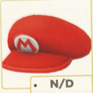
Una gorra roja con una cuantas aventuras a sus espaldas.
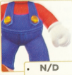
El unico e incomparable traje que ha resistido tantas aventuras.
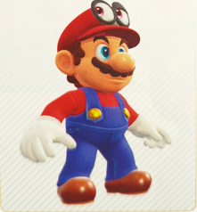
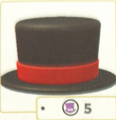
Este traje tan clásico es el más vendido en la tienda Crazy Cap de Villa Chistera.
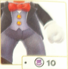
La tienda Crazy Cap de Villa Chistera es famosa por sus impecables trajes a medida.
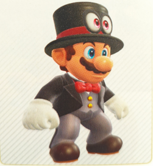
¡Un clásico de Crazy Cap!.
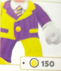
¡Muestra tu lealtad a Crazy Cap llevando este impresionante traje!.
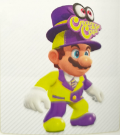
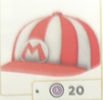
No estás jugando al golf a menos que todo el mundo esté mirando tu sombrero.
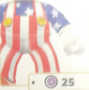
"¡¿Que?! ¡Esèra, con este traje tan chillón no oigo un pimiento!".
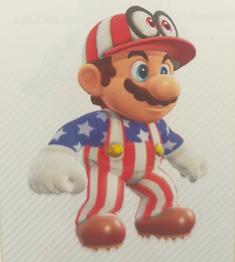
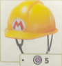
Ta estés construyendo o inspeccionando, tienes que mantener la cabeza a salvo..
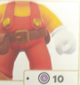
Este es el traje perfecto para construir o inspeccionar la construcción de otros..
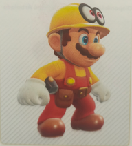
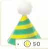
El sombrero perfecto para caerte de culo, ir en coches minúsculos y echar a perder una buena tarta.
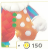
Lo suficientemente espacioso para guardar todas tus cosas y lo suficientemente colorado como para que te vean desde el espacio..
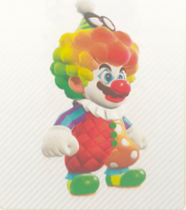
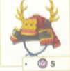
Los samuráis llevaban cascos funcionales y elegantes.
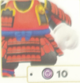
Los samuráis se paseaban llevando básicamente, obras de arte.
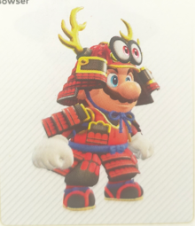
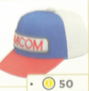
La gorra perfecta cuando toca ponerse manos a la obra.
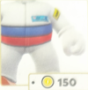
Un traje aparentemente condenado a ser manchado con aceite de motor.
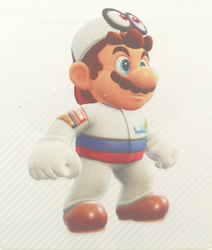
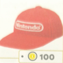
Un gorro rojo con un ala llamantivamente larga. Huele raro.
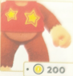
Un traje muy popular entre los entusiastas de las colas.
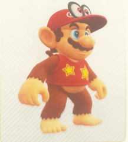
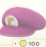
Un gorro con una L invertida. ¡Está casi nuevo!
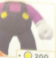
Con este traje querrás acechar entre las sombras esperando tu momento para ser el centro de atención.
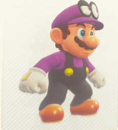
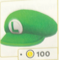
La gorra típica pero en verde chillón. Con L de "campeon".
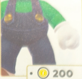
Versión en verde chillón del clásico atemporal. El verde significa "¡Vamos a por ellos!".
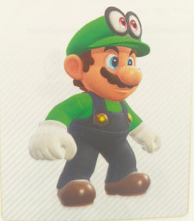
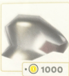
Una gorra de metal que resulta vagamente familiar...
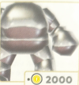
Para cuando te apetezca envolverte en nostalgia y un poco de papel de aluminio.
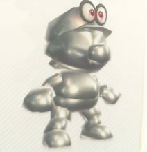